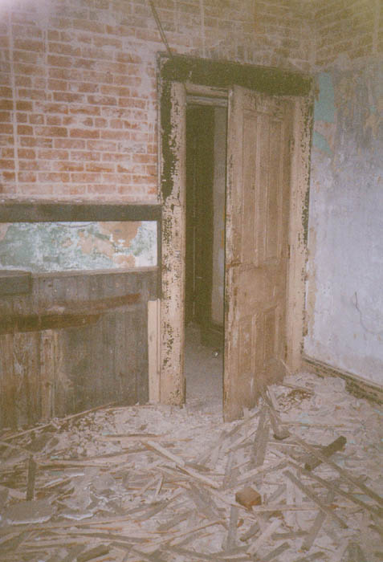
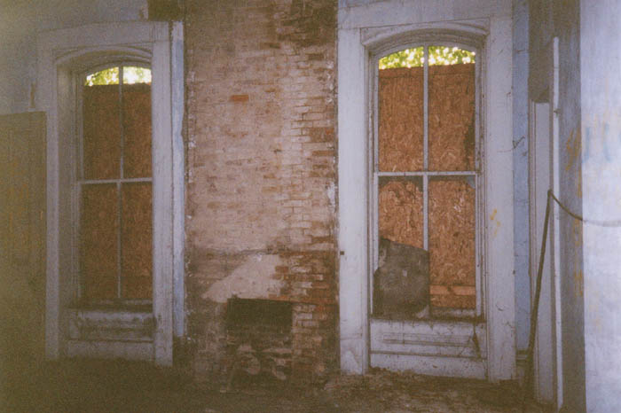
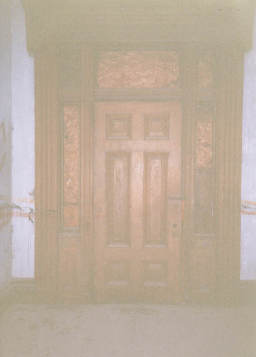
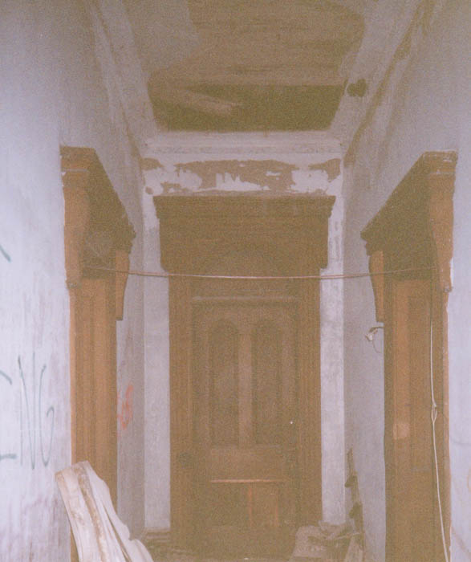
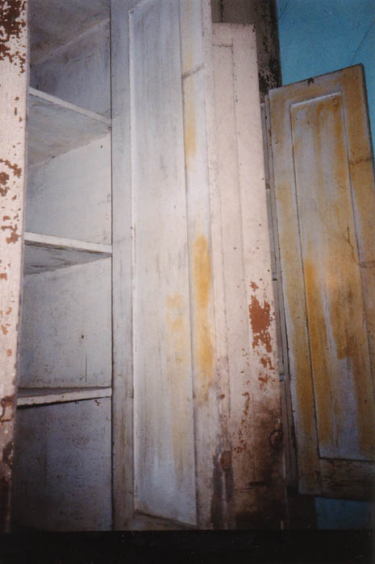
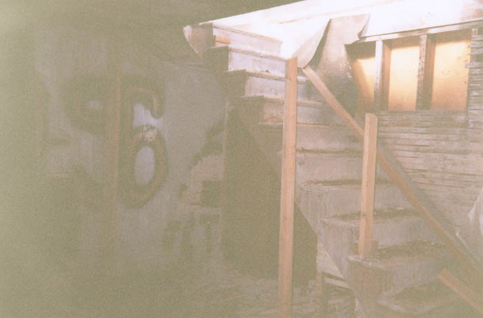

Once inside, we found the mansion to be in pretty bad shape. Several ground floor rooms were so full of construction junk that the doors would barely open. The doors and windows to the outside were mostly boarded securely over.

The front door, although sealed up, was very imposing. The doorframes are all thick, inlaid wood, as are the staircases and balustrades. As I said, this was the earliest stages of the renovation process, and they had done little more than string extension cords all over the place at this point. There were words spraypainted on certain walls, but it's hard to tell whether the renovators or vandals did it.

The overall impression you get from the place is that whoever lived here was rich--really rich. I mean, how many normal people give their houses names? The ceilings are high, the woodwork expensive, the bedrooms numerous. Most of the rooms were unidentifiable at the time I was there, but there were certainly more than six bedrooms in this place. There was also the huge main room with the supposedly haunted fireplace. I went over and crouched next to the fireplace but didn't feel any chills.

The second floor was equally enormous. Each room has tall, boarded windows, as well as built-in closet cupboards with shelves. Nothing in any of them, though. I get the impression that the Trinway Mansion has been picked clean over time. There's even some indoor plumbing, which is at least a sign that it's been occupied since the Great Depression. Not very surprising, really; seventy-plus years of neglect would have done a lot more damage than this.

After exploring the two main floors for a while we decided to head up into the attic and see what the roof was like. To see what we found, click below.

CONTINUE TO THE ROOF
Back